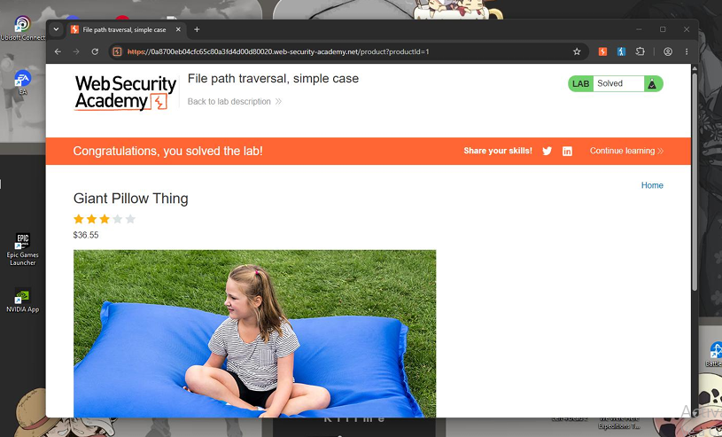

Introducción
En este laboratorio de la Web Security Academy de PortSwigger trabajé una vulnerabilidad de File Path Traversal (también llamada Directory Traversal). La aplicación carga la imagen de cada producto usando el nombre del archivo tal cual lo manda el usuario; al no validarlo, es posible “salir” de la carpeta de imágenes y leer archivos arbitrarios del servidor. El reto se resuelve al leer el archivo /etc/passwd.
Objetivo
Aprovechar que la función que sirve las imágenes construye la ruta directamente a partir de la entrada del usuario, sin validarla ni canonicalizarla, para recorrer el árbol de directorios hasta la raíz y leer /etc/passwd. Recuperar su contenido es la condición que marca el laboratorio como «Solved».
El laboratorio
Este reto pertenece a la Web Security Academy de PortSwigger. Puedes abrirlo aquí:
File path traversal, simple case portswigger.net/web-security/file-path-traversal/lab-simple¿Qué es y por qué ocurre?
El File Path Traversal es una falla de control de acceso que permite leer (y a veces escribir) archivos fuera del directorio previsto. Sucede cuando el servidor arma una ruta del sistema con entrada del usuario sin validarla: secuencias como ../ suben un nivel en el árbol de directorios, hasta llegar a la raíz y descender a cualquier archivo.
Procedimiento
- Iniciar el laboratorio y abrir la tienda en el navegador integrado de Burp (Proxy → «Open Browser»), para que todo el tráfico pase por el proxy.
- Navegar por la tienda, abrir un producto con «View details» y revisar el Site map de Burp para localizar la petición de la imagen.
- Seleccionar la petición de la imagen y enviarla a Repeater (clic derecho → «Send to Repeater»).
- Sustituir el valor del parámetro del nombre de archivo por el payload de recorrido y enviar la petición.
- Confirmar que la respuesta devuelve 200 OK con el contenido de /etc/passwd.
- Verificar que el laboratorio cambia a estado «Solved».
El payload
El valor que se inyecta en el parámetro del nombre de archivo es:
../../../etc/passwd
Cada ../ sube un nivel de directorio; tres saltos bastan para llegar a la raíz desde la carpeta de imágenes (añadir de más es inofensivo, porque no se puede subir por encima de la raíz). Desde ahí, /etc/passwd apunta a un archivo estándar de Linux, legible por todos, ideal como prueba de concepto.
Evidencia
Captura del laboratorio resuelto:

Mitigación
- Referencias indirectas: no exponer nombres de archivo reales; usar un identificador que el servidor mapee internamente a la ruta.
- Lista blanca: aceptar solo valores esperados (p. ej. ^[a-zA-Z0-9_-]+\.(png|jpg)$).
- Canonicalizar y verificar: resolver la ruta final y comprobar que sigue dentro del directorio base permitido.
- Mínimo privilegio: ejecutar el servicio sin permisos de lectura sobre archivos sensibles del sistema.
Conclusión
El laboratorio muestra, en su forma más pura, cómo la falta de validación al construir rutas del sistema deriva en lectura arbitraria de archivos. Con un solo parámetro manipulado y sin técnicas de evasión, se logró leer /etc/passwd. Refuerza por qué el control de acceso a recursos debe apoyarse en referencias indirectas, listas blancas y canonicalización.